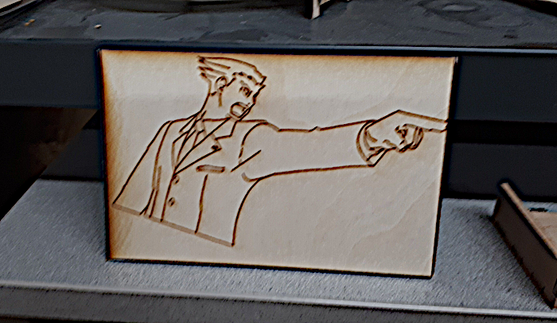

2018-07-15: laser etching at the Winnipeg North Forge makerspace
While I work as a software developer in my day job, I am also a small businessman and thus curious about companies that are in different industries.
Mechanical engineering and shop-related activities like woodcrafting seemed kinda nifty, in the sense of getting to build something physical.
I've done renovations on houses over the years, so I am no stranger to working with my hands, having done quite a lot of repairs. Yet I was looking for something more than just drilling holes with a press, painting or using a glue-gun.
Now I try to stay up-to-date with the Winnipeg business scene, so I looked around at some of the makerspaces and other facilities that allow public membership. This place called the North Forge looked simple enough and they even offered training in several types of CNC and laser etching machines.
Lasers are neat, so the device of choice was the Epilog Fusion M2-40 with 120W laser. You can see a picture of it below; inspite of website appearance, it is infact rather massive in size and requires a bit of skill to use safely.
Note that the image isn't blurry; this particular machine had been through a lot, but otherwise had been holding up well over the years.
The software supplied with the machine is not dissimilar from a standard SVG drawing program, such as Illustrator or CorelDraw, and it supports both raster and vector types of images: BMP, PNG, JPEG, SVG, etc. Ideally it prefers vector graphics since they allow the user to precisely set the hairline and tell the laser where to etch or engrave and then where to cut.
My choice of design was inspired by the Flag of Gdańsk since my family was originally from there and I still have relatives who live in the area. It's a neat enough symbol that isn't too complex for a first attempt, and could be drawn as an SVG in a short timeframe; admittedly I drew my own at home so as to save time once I was at the makerspace.
Ensuring that the exhaust system was on and that the facility was well ventilated, I opened the main door and cleaned the three lenses that are used by the laser. The instructor then supplied a piece of scrap wood for me to practice on.
The Fusion supports many types of material, so the laser needs to be precisely on the correct setting, lest there be potentially overheating of the wood or even damage to the servos that move the laser. So the next step required that I do a bit of manual reading to determine what parameters are actually safe. After inputting those and using the small joystick to select the starting point, I send the job to console and it started the laser cutting.
See the blurriness in the middle? That is where the the head was moving across the board at incredible speeds. To begin, I tested out the software to see how the hairline settings worked and ended up with this:

Alright, so I can draw font and simple shapes now. Excellent. Time to move on to testing it with the SVG I drew earlier. Following all of the safety procedures, I send the image and started up the machine. Afterwards I got this:
Ouch. Seems I had overdone it and burned part of the wood. In addition, the cutlines were in the wrong place and then caused the laser to burn gapping holes in the wood at the minor details of the crown and small crosses. Though I was rather impressed by how accurate it can cut; some of those tiny details are less than 1 millimetre.
Fixing all of the mistakes from the previous attempt, I took a few minutes to clean up the vector graphic and set the hairlines to only cut at the edges. Then discovering that there is an engrave mode which can cut only a little bit into the wood, I decide to try it. My next attempt was as follows:
Not bad, wouldn't you say? All of the small details were etched out quite well, even the tiny bumps on the edges of the leaves that are on the top of the crown.
So the Epilog Fusion was neat machine to use, and my experience with it was good. Thanks again to the North Forge for letting me play around with their equipment.
Below is a quick gallery of some of the art that other, more talented users, were building in the meantime:
